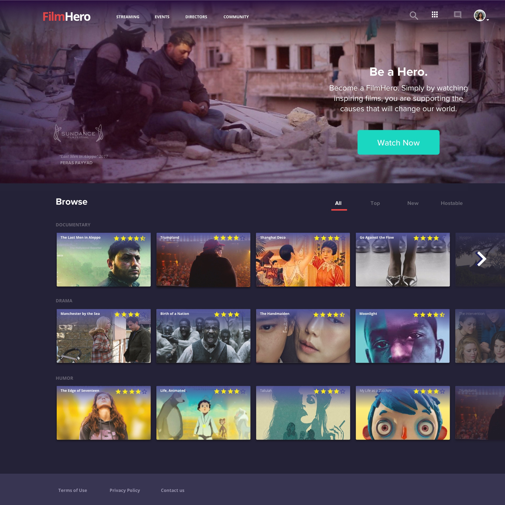

FilmHero
User Interface Design

Filmhero is a self-distribution platform that allows Independent Filmmakers to monetize their films while advocating a social impact and interactive dialogue between filmmakers and film lovers. The users of our platform can help support the filmmakers and support the cause by streaming, licensing, downloading and hosting screenings for Independent Films.
Create a streaming platform for indie filmmakers to self-monetize, track, and review metrics for their film to reach a consumer target segment
Is there even a need for Indie Film Streaming Platform? Oh yes indeed. Indie Filmmakers are storytellers who attempts to make a statement and send a message around the world. They are political, socio-economic, and human rights activists who develop and produce original films that educate, inspire, share stories across cultures and bring public awareness. So yes, there's definitely a need in heated debates and topics.
The main challenge was the viewers. We conducted user testing with indie film lovers and they weren't interested in paying a monthly subscription fee or pay a one time fee to watch the indie films and most said they wouldn't watch indie films all the time like they would with Netflix and Amazon. There is also too much competition with the big streaming platforms like Netflix, Hulu and Amazon but unfortunately there are just not enough room for another indie streaming platform.
Our first MVP Solution was to create the streaming platform, but since there isn't a need for it we moving on to our next MVP. I took the initiation and spoke to our CEO about a new approach that I strongly think there is a need and will help solve filmmakers problems. Ever wonder how movies and films got on the big screens and received bad ratings? And how about television shows that got broadcasted and canceled the next season? It's not a mystery. It's because they weren't given much thought about how the public will feel about the films or tv shows. If only there was a way to actually conduct a screening with potential viewers and receive feedback during pre-production, during production, and post-production or even as soon as the ideation process occurs much like how we test users beforehand before we built out the product.
This is exactly what Indie Filmmakers need. A user-testing and screening method with potential viewers in their specific target market that will provide them with sufficient feedback to help them come up with a strategic plan and ideas for their upcoming film projects. It benefits filmmakers in the long run because now they don't have to wait until their film is completed and then get public backlash. At least this will help them save more money, time and effort before it turns into a financial crisis at hand. Secondly, this new approach will allow users to feel connected to the film and build their own network and community-base. There is so much more to be discussed about our new interventions and newly developed innovations.
I am currently the Design Lead for the new MVP and currently leading the small design team in strategizing and planning for the next couple of months. I am constructing a plan, setting up goals and milestones for the next couple of months while we conduct User Research Development phase.
Below are my previous designs for our Filmmaker and Admin dashboard. The Filmmaker and Admin Dashboard consist of a visual data that allows filmmakers to track, monitor, analyze, and measure the sales metrics for their films. The Admin Dashboard also includes a much more extensive version which gives us a overview of the films submitted, amount of tickets sold, sales revenue and much much more!